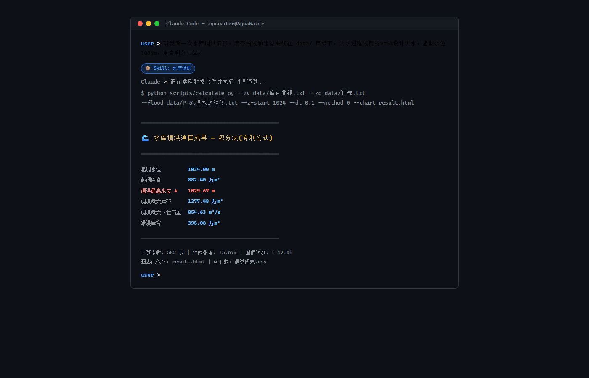
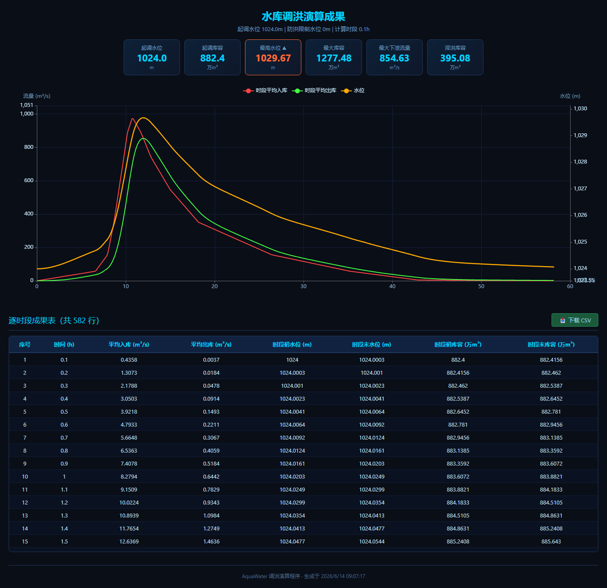

一个用了十年的水库调洪演算程序，先被 AI 辅助重写成 Web 应用，又被"炼化"成了 Claude Code Skill——现在只需要在终端里说一句"水库调洪"，AI 就帮你完成专业水文计算。
这个程序的起点是一个 C# WinForms 桌面软件，在 Windows 上跑了十来年。功能不差——库容曲线、泄流曲线、洪水过程线三条数据进去，三种演算方法任选，结果表格加图表出来——但它有个致命伤：只能在 Windows 上跑，换个电脑就得重新编译部署，分享给同事还得打包发邮件。
去年用 AI 辅助，把核心算法从 C# 移植到了 Python，配上了 Flask + ECharts 的 Web 界面，部署到阿里云，浏览器就能用。这一步解决了跨平台和分享的问题。
但还不够——每次用还得打开浏览器、上传文件、填参数。能不能更自然一点？
于是有了第三步：炼化成 Claude Code Skill。
Claude Code 的 Skill 机制，本质上是把专业知识、算法脚本、示例数据打成一个包，让 AI 在需要时自动加载。对用户来说，你不再需要"打开某个软件、点某个按钮、填某个参数"——你在终端里说你要做什么，AI 自己就知道该跑什么脚本、该问你什么参数。
这个 Skill 的内部结构：
aquawater-flood-routing.skill （本质是一个 zip 包） ├── SKILL.md # 告诉 Claude：何时触发、怎么工作 ├── scripts/ │ ├── reservoir.py # 核心算法：三种演算方法 │ ├── calculate.py # CLI 包装 + 图表生成 │ └── sample_data/ # 示例数据，开箱即跑 └── assets/ # 图表模板
SKILL.md 是"大脑"——定义了触发词（调洪演算、水库调洪、洪水调节……）、工作流程（先问数据、再设参数、然后计算、最后出图）、以及硬约束（数据必须单调、泄流不能为负）。reservoir.py 是"心脏"——从 C# 一行行翻译过来的水量平衡算法，包含积分法（专利公式）、龙格库塔法（四阶）和迭代法（二分）三种方法。整套不到 20KB。
打开终端（macOS/Linux 用 Terminal，Windows 用 Git Bash 或 WSL），复制下面一行，回车：
curl -o ~/.claude/skills/aquawater-flood-routing.skill https://github.com/aquawater123/AquaWater/releases/download/v1.0.0/aquawater-flood-routing.skill
重启 Claude Code，生效。点击上面代码块可直接复制。
在 Claude Code 中输入"水库调洪"，Skill 自动加载，交互式引导你完成计算：

Claude 会依次问你：库容曲线在哪？泄流曲线呢？洪水过程线？起调水位多少？你只需给文件路径和数字，剩下的全自动——算完输出特征值摘要（最高水位、最大泄流、滞洪库容）、逐时段成果表，还能一键生成交互图表和 CSV 数据。

想换演算方法？说一句"用龙格库塔法"。想加防洪限制水位？告诉它数字。团队协作？把 Skill 放到项目 .claude/skills/ 目录，全员共用同一套算法，计算结果口径统一。
Skill 封装了三种主流演算方法，核心是水量平衡方程 dV/dt = I(t) - Q(Z)：
| 方法 | 原理 | 特点 |
|---|---|---|
| 积分法 专利公式 | S-Q 近似线性求解析解 | ⭐ 默认推荐，速度快精度高 |
| 龙格库塔法 四阶 | 经典 RK4 数值求解 ODE | 理论严密，适合高精度需求 |
| 迭代法 二分 | 猜试水位逐次收敛 | 思路直观，适合教学验证 |
几个水利人关心的细节：汛限水位逻辑（低于汛限闸门关闭 Q=0，填库到汛限才泄流，回落不低于汛限）；杜绝负泄流（起调水位低于泄流曲线零点时，出库 clamp 为 0，而非外推产生负值）；图表入库/出库统一用时段平均值画在时段中点、水位用瞬时值画在精确时间点——三条曲线各自独立坐标。
从一个 Windows 专用的 C# 桌面程序，到浏览器里随处可用的 Web 应用，再到终端里一句话就能调用的 AI Skill——这个老程序的三次生命，每次都是被新的技术形态"逼"出来的。AI 时代，专业的尽头可能不是一个更好用的软件，而是你根本不需要"打开软件"。